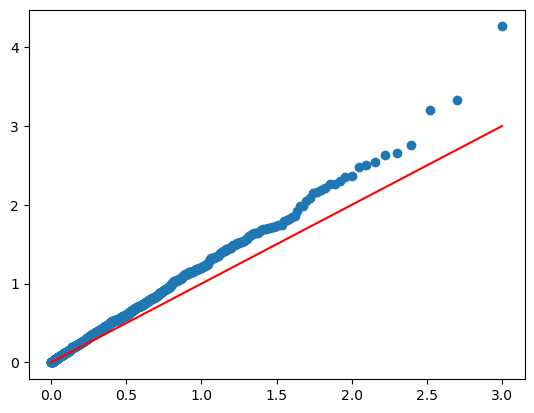
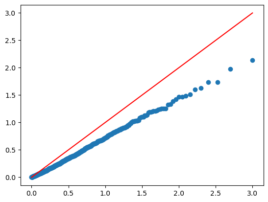
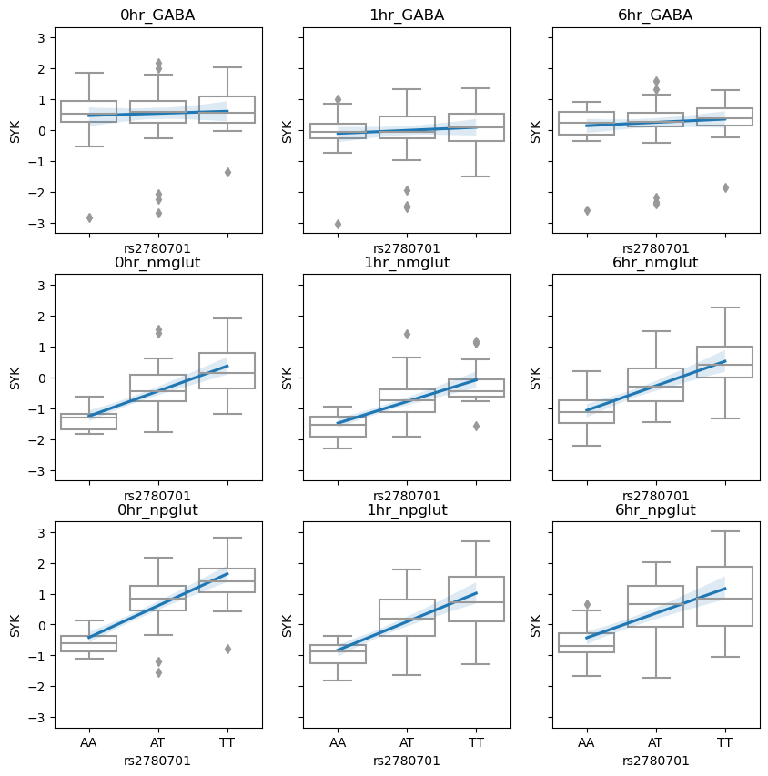
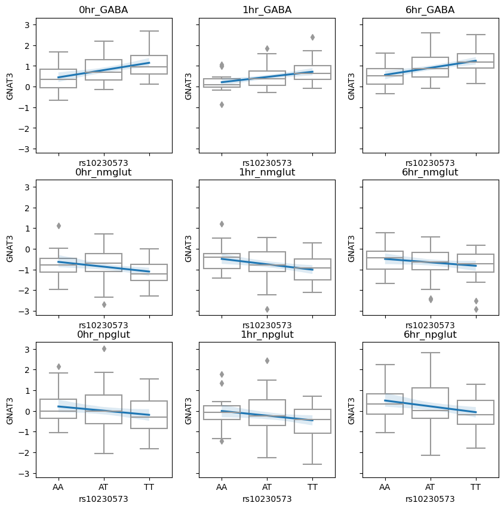
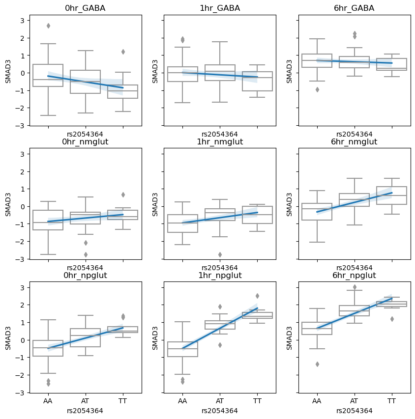
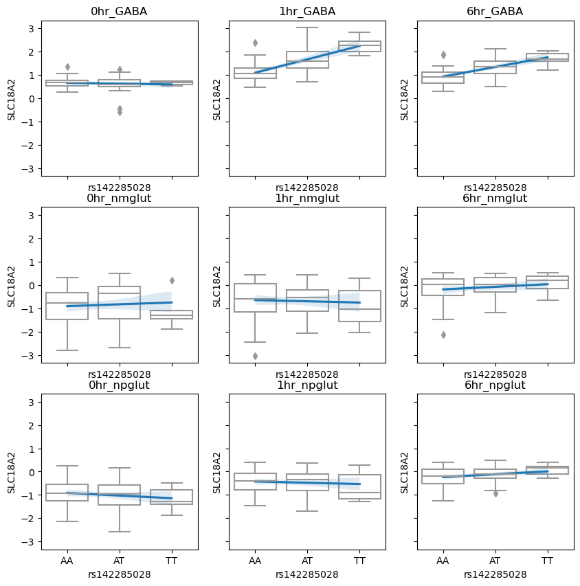
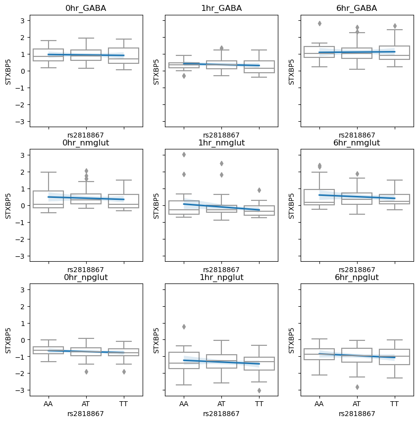
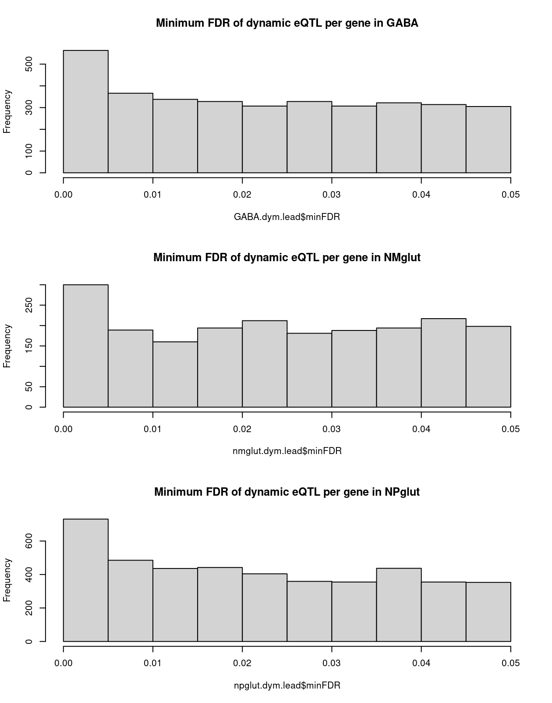

Last updated: 2024-06-06
Checks: 6 1
Knit directory: neuron_stim_eQTL100/
This reproducible R Markdown analysis was created with workflowr (version 1.7.0). The Checks tab describes the reproducibility checks that were applied when the results were created. The Past versions tab lists the development history.
The R Markdown file has unstaged changes. To know which version of
the R Markdown file created these results, you’ll want to first commit
it to the Git repo. If you’re still working on the analysis, you can
ignore this warning. When you’re finished, you can run
wflow_publish to commit the R Markdown file and build the
HTML.
Great job! The global environment was empty. Objects defined in the global environment can affect the analysis in your R Markdown file in unknown ways. For reproduciblity it’s best to always run the code in an empty environment.
The command set.seed(20231109) was run prior to running
the code in the R Markdown file. Setting a seed ensures that any results
that rely on randomness, e.g. subsampling or permutations, are
reproducible.
Great job! Recording the operating system, R version, and package versions is critical for reproducibility.
Nice! There were no cached chunks for this analysis, so you can be confident that you successfully produced the results during this run.
Great job! Using relative paths to the files within your workflowr project makes it easier to run your code on other machines.
Great! You are using Git for version control. Tracking code development and connecting the code version to the results is critical for reproducibility.
The results in this page were generated with repository version 90bd1d4. See the Past versions tab to see a history of the changes made to the R Markdown and HTML files.
Note that you need to be careful to ensure that all relevant files for
the analysis have been committed to Git prior to generating the results
(you can use wflow_publish or
wflow_git_commit). workflowr only checks the R Markdown
file, but you know if there are other scripts or data files that it
depends on. Below is the status of the Git repository when the results
were generated:
Ignored files:
Ignored: .DS_Store
Ignored: .RData
Ignored: .Rhistory
Ignored: data/.DS_Store
Ignored: data/single_group_ctwas/.DS_Store
Untracked files:
Untracked: data/SLC18A2_rs142285028_9cond.txt
Untracked: data/STXBP5_rs2818867_9cond.txt
Untracked: data/dynamic_eGene_beta_filtered.RDS
Untracked: data/neuroticism_ctwas_related_sumstats.RDS
Unstaged changes:
Modified: analysis/cellregmap.Rmd
Modified: analysis/eQTL_interaction.Rmd
Note that any generated files, e.g. HTML, png, CSS, etc., are not included in this status report because it is ok for generated content to have uncommitted changes.
These are the previous versions of the repository in which changes were
made to the R Markdown (analysis/cellregmap.Rmd) and HTML
(docs/cellregmap.html) files. If you’ve configured a remote
Git repository (see ?wflow_git_remote), click on the
hyperlinks in the table below to view the files as they were in that
past version.
| File | Version | Author | Date | Message |
|---|---|---|---|---|
| html | 90bd1d4 | Lifan Liang | 2024-05-23 | Build site. |
| Rmd | b79da9b | Lifan Liang | 2024-05-23 | wflow_publish(c("analysis", "docs")) |
| html | b79da9b | Lifan Liang | 2024-05-23 | wflow_publish(c("analysis", "docs")) |
CellRegMap was used for the purpose of interaction testing. Given around 95 cell lines’ transcriptome measured for 3 cell types and 3 time points, the model to perform interaction testing is:
\[ y = G\beta + G\gamma + W\psi + \mu + \epsilon \]
where \(y\) is gene expression jointly normalized across 9 conditions, \(G\) is genotype, \(W\) are covariates, \(\mu\) is individual random effect, \(\epsilon\) is iid error, and \(\beta\) and \(\psi\) are corresponding fixed effects. The focus of the model is \(\gamma\), the random slope for genotypes.
\[ \gamma \sim MVN(0,\sigma Z) \]
where \(Z\) is the design matrix for the 9 conditions. Elements within the same condition are 1, otherwise 0. \(\sigma\) dictates the effect size of \(\gamma\). CellRegMap follows StructLMM’s idea of using Rao’s score test to evaluate the null hypothesis that \(\sigma\) is 0. According to CellRegMap, this is the highest power test when many contexts were jointly tested.
We permuted the 9 conditions for each individual while preserving the fixed effect of genotypes and conditions. Permutation P values show that the calibration of P values are unstable, it can be inflated or deflated depending on the gene tested.
 
We tested the dynamic effects on all the top eQTLs from mixed effect eQTL mapping. And applied Storey’s q value for multiple testing correction. There are 805 significant eQTLs.
By visualizing the eQTL, it seems most significant results are cell type specific eQTLs. Some are dynamic eQTL shared across cell types. We need to construct the context differently to detect cell type specific dynamic eQTL.

 
The heuristic approach identified dynamic eQTLs with FDR<0.05 in 1/6 hours and nominal p value > 0.1 in 0 hour. Somehow it identifies more eQTLs than any interaction testing I tried. After checking the interaction testing results of heuristic eQTL. The cause is two folds:
This is one example of GABA specific dynamic eQTL.

| snps | gene | statistic | pvalue | FDR | beta | se | |
|---|---|---|---|---|---|---|---|
| 0hr_GABA | rs142285028 | SLC18A2 | 0.8605207 | 0.3925710 | 0.9029732 | 0.1367555 | 0.1589219 |
| 0hr_nmglut | rs142285028 | SLC18A2 | 0.7950990 | 0.4299130 | 0.9342332 | 0.1271680 | 0.1599398 |
| 0hr_npglut | rs142285028 | SLC18A2 | -1.8359811 | 0.0706074 | 0.6290750 | -0.3181558 | 0.1732892 |
| 1hr_GABA | rs142285028 | SLC18A2 | 9.3387801 | 0.0000000 | 0.0000000 | 1.0719865 | 0.1147887 |
| 1hr_nmglut | rs142285028 | SLC18A2 | -0.4924553 | 0.6240568 | 0.9623638 | -0.0863948 | 0.1754368 |
| 1hr_npglut | rs142285028 | SLC18A2 | 0.2922657 | 0.7709240 | 0.9725083 | 0.0489167 | 0.1673705 |
| 6hr_GABA | rs142285028 | SLC18A2 | 6.9816324 | 0.0000000 | 0.0000016 | 0.9048678 | 0.1296069 |
| 6hr_nmglut | rs142285028 | SLC18A2 | 0.3181802 | 0.7514531 | 0.9800319 | 0.0586216 | 0.1842401 |
| 6hr_npglut | rs142285028 | SLC18A2 | 1.5008975 | 0.1376952 | 0.7126045 | 0.2606004 | 0.1736297 |
Changing the design matrix Z and input datawould help with the testing.
| Testing.approach | Pval |
|---|---|
| time point testing across 9 conditions | 2.70e-03 |
| GABA time point testing across 9 condition | 1.48e-09 |
| Time point testing within GABA samples | 2.33e-15 |
Some heuristic dynamic eQTLs are not significant in any interaction testing. They usually have similar effect size. But one condition has a smaller standard error, resulting in borderline significant P value and FDR.

| snps | gene | statistic | pvalue | FDR | beta | se | |
|---|---|---|---|---|---|---|---|
| 0hr_GABA | rs2818867 | STXBP5 | -3.505089 | 0.0008190 | 0.0927614 | -0.2117779 | 0.0604201 |
| 0hr_nmglut | rs2818867 | STXBP5 | -1.437220 | 0.1562196 | 0.8318559 | -0.1086921 | 0.0756266 |
| 0hr_npglut | rs2818867 | STXBP5 | -1.747244 | 0.0849807 | 0.6617738 | -0.1203133 | 0.0688589 |
| 1hr_GABA | rs2818867 | STXBP5 | -2.207051 | 0.0305915 | 0.5071340 | -0.1734916 | 0.0786079 |
| 1hr_nmglut | rs2818867 | STXBP5 | -2.825466 | 0.0062643 | 0.3271402 | -0.2469860 | 0.0874142 |
| 1hr_npglut | rs2818867 | STXBP5 | -1.234892 | 0.2208856 | 0.7986773 | -0.0846395 | 0.0685401 |
| 6hr_GABA | rs2818867 | STXBP5 | -1.258781 | 0.2121757 | 0.8078649 | -0.1120046 | 0.0889786 |
| 6hr_nmglut | rs2818867 | STXBP5 | -3.673081 | 0.0005123 | 0.0933896 | -0.3009610 | 0.0819369 |
| 6hr_npglut | rs2818867 | STXBP5 | -4.009399 | 0.0001454 | 0.0180394 | -0.2001024 | 0.0499083 |

sessionInfo()R version 4.1.2 (2021-11-01)
Platform: x86_64-apple-darwin17.0 (64-bit)
Running under: macOS Big Sur 10.16
Matrix products: default
BLAS: /Library/Frameworks/R.framework/Versions/4.1/Resources/lib/libRblas.0.dylib
LAPACK: /Library/Frameworks/R.framework/Versions/4.1/Resources/lib/libRlapack.dylib
locale:
[1] en_US.UTF-8/en_US.UTF-8/en_US.UTF-8/C/en_US.UTF-8/en_US.UTF-8
attached base packages:
[1] stats graphics grDevices utils datasets methods base
other attached packages:
[1] workflowr_1.7.0
loaded via a namespace (and not attached):
[1] Rcpp_1.0.11 highr_0.9 bslib_0.3.1 compiler_4.1.2
[5] pillar_1.7.0 later_1.3.0 git2r_0.29.0 jquerylib_0.1.4
[9] tools_4.1.2 getPass_0.2-2 digest_0.6.29 jsonlite_1.7.3
[13] evaluate_0.14 tibble_3.1.6 lifecycle_1.0.1 pkgconfig_2.0.3
[17] rlang_1.0.0 cli_3.1.1 rstudioapi_0.13 yaml_2.2.2
[21] xfun_0.29 fastmap_1.1.0 httr_1.4.2 stringr_1.4.0
[25] knitr_1.37 sass_0.4.1 fs_1.5.2 vctrs_0.3.8
[29] rprojroot_2.0.2 glue_1.6.1 R6_2.5.1 processx_3.5.2
[33] fansi_1.0.2 rmarkdown_2.11 callr_3.7.0 magrittr_2.0.2
[37] whisker_0.4 ps_1.6.0 promises_1.2.0.1 htmltools_0.5.2
[41] ellipsis_0.3.2 httpuv_1.6.5 utf8_1.2.2 stringi_1.7.6
[45] crayon_1.4.2